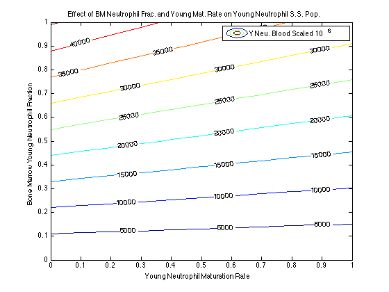
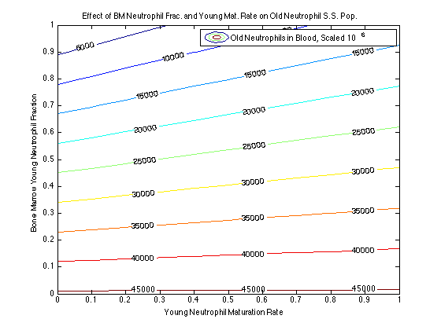
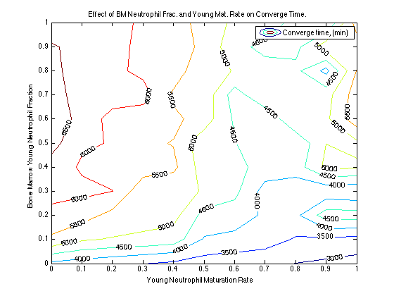

%This code was written by Mark Kalinich on 20140305 to use ODE45 to %numerically integrate a system of equations describing neutrophil %population kinetics. %Differential Equation Model: %d(New)/dt = R_production,new - R_death,old - R_maturation %d(Old)/dt = R_production,old - R_death,old + R_maturation %for Steady state: 0=R_production,old - R_death,old + R_maturation %0 = (Cell Production rate)*(Old Fraction)-(Total Death)*(Old/(Old+New) %for only old cells: %0 = Cell Production Rate - Total Death Rate %For Only Young Cells: %Model Assumptions: %1) Constant rate of total cell production from bone %2) constant ratio of old to new neutrophils in the bone %3) random selection of neutrophils from bone %4) Constant fraction of young neutrophils mature into old neutrophils %5) Constant rate of total cell death (Death_old = Constant*(# dead cells) %6) Cell death is not dependent on cell age %7) R_production is a binomial random variable that uses the specified %fraction of old vs. new cells. (R_production_total= constant = R_new+R+old) %8) Person weighs 70 kg. clc;close all;clear all; %set integration boundaries for weight of catalyst T0=0; % minutes TF=10000; %minutes, ~2 days Iteration = 11; %number of conditions we'll be scanning %initialize storage vectors Young_Store = zeros(Iteration,1);%final number of young neutrophils Old_Store = zeros(Iteration,1);%final number of old Neutrophils Total_Store = zeros(Iteration,1); Converge = zeros(Iteration,1); for i = 1:Iteration %exploring bone marrow young fraction with this for z = 1:Iteration %exploring mature probability with this %set initial conditions, making sure units are compatible Weight = 70; %person's weight, in kg Young_fraction = linspace(0,1,Iteration); % select Bone young neutrophil fraction I'm exploring Young_fraction = Young_fraction(i); Neutrophil_blood = 65*10^7*Weight; %neutrophils initially in blood pool for a 70 kg person, "Neutrophil kinetics in health and disease" Summers 2010 Band_Fraction = .015; % For an uninfected person, bands range from 0-3% in blood http://www.nlm.nih.gov/medlineplus/ency/article/003657.htm Young_initial = Neutrophil_blood*Band_Fraction; % initial number of bands in the pool Old_initial = Neutrophil_blood*(1-Band_Fraction);% initial number of mature cells in pool Cells_Entering_System = 1.7*10^9*Weight; %this is the number of cells entering from bone marrow per day "Neutrophil kinetics in health and disease" Summers 2010 Mature_probability = linspace(0,1,Iteration); %fraction of band cells in blood that will mature after 1 day Mature_probability = Mature_probability(z); %select mature probability Death_Leaving_System = 1.7*10^9*Weight; %assume steady state Mean_residence_time = Neutrophil_blood/Cells_Entering_System; %Add in conversions to get proper rates. Time_Convert = 1440; %minutes/day Cell_Convert = 1*10^6; %convert cells to millions of cells Cell_Enter = round(Cells_Entering_System/(Time_Convert*Cell_Convert)); Mature_Prob = Mature_probability/Time_Convert; %fraction of band cells that matures into an old cell in 1 minute. Death = round(Death_Leaving_System/(Time_Convert*Cell_Convert));% number of cells to die each cycle; assume steady state %pack initial conditions N0=[Young_initial/Cell_Convert Old_initial/Cell_Convert]; %10^6 cells %pack constant parameters p.Y_enter = Cell_Enter*Young_fraction; %cells/minute p.Old_enter = Cell_Enter*(1-Young_fraction); %K p.Mature = Mature_Prob; %mature probability in minutes p.Death = Death; %1/Pa %execute the ode solver [T,N]=ode45(@(T,N)odeneutrophil(T,N,p),[T0 TF],N0); %Store Information: Finish = length(T); Tolerance = .1;% define as difference less than 10^5 cells (10^-6 fraction) %Tolerance = Tol*Neutrophil_blood; I'm considering doing an %absolute difference from initial value instead of the difference between %values %initialize Vectors ConvergecheckOld = zeros((Finish-1),1); ConvergecheckYoung = zeros((Finish-1),1); Convergecheck = zeros((Finish-1),1); %Establish difference between values at j and j+1 for j = 1:Finish-1 ConvergecheckOld(j)= abs((N(j,2)-N(j+1,2))); ConvergecheckYoung(j) = abs((N(j,1)-N(j+1,1))); end %test whether or not the difference b/t j and j+1 is below our tolerance %for both young and old neutrophils for k = 1:length(ConvergecheckOld) if ConvergecheckOld(k)<Tolerance && ConvergecheckYoung(k)<Tolerance Convergecheck(k) = 1; else Convergecheck(k) = 0; end end Convergetime = find(Convergecheck==1,1,'first'); Young_Store(i,z) = N(Finish,1);%final number of young neutrophils Old_Store(i,z) = N(Finish,2); %final number of old Neutrophils Total_Store(i,z) = Young_Store(i,z)+Old_Store(i,z); Converge(i,z) = T(Convergetime); end end fig = figure; %generate contour plot of influence of BM Young frac. and mat. rate on Young pop contour(linspace(0,1,Iteration),linspace(0,1,Iteration),Young_Store, 'ShowText','on') xlabel('Young Neutrophil Maturation Rate') ylabel('Bone Marrow Young Neutrophil Fraction') title('Effect of BM Neutrophil Frac. and Young Mat. Rate on Young Neutrophil S.S. Pop.') legend('Y Neu. Blood Scaled 10^6') saveas(fig,'Young Neutrophil Population','jpeg') fig2 = figure; %old neutrophils contour(linspace(0,1,Iteration),linspace(0,1,Iteration),Old_Store, 'ShowText','on') xlabel('Young Neutrophil Maturation Rate') ylabel('Bone Marrow Young Neutrophil Fraction') title('Effect of BM Neutrophil Frac. and Young Mat. Rate on Old Neutrophil S.S. Pop.') legend('Old Neutrophils in Blood, Scaled 10^6') saveas(fig2,'Old Neutrophil Population','jpeg') fig3 = figure; %converge time contour(linspace(0,1,Iteration),linspace(0,1,Iteration),Converge, 'ShowText','on') xlabel('Young Neutrophil Maturation Rate') ylabel('Bone Marrow Young Neutrophil Fraction') title('Effect of BM Neutrophil Frac. and Young Mat. Rate on Converge Time.') legend('Converge time, (min)') saveas(fig3,'Convergence Time','jpeg') % fig = figure; % plot(linspace(0,1,Iteration),Young_Store, '--rd','MarkerSize',8,'MarkerFaceColor','r','MarkerEdgeColor','k'); % hold on % plot(linspace(0,1,Iteration),Old_Store, '--gd','MarkerSize',8,'MarkerFaceColor','g','MarkerEdgeColor','k'); % hold on % plot(linspace(0,1,Iteration),Total_Store,'--bd','MarkerSize',8,'MarkerFaceColor','b','MarkerEdgeColor','k'); % hold on % plot(linspace(0,1,Iteration),Converge, '--kd','MarkerSize',8,'MarkerFaceColor','k','MarkerEdgeColor','k'); % % xlabel ('Young Neutrophil Bone Fraction') % ylabel ('Neutrophil Count/10^6') % title (strcat('Neutrophil Count vs. BM Young Neutrophil Fraction')) % legend ('Young Neutrophils','Old Neutrophils','Total Neutrophils','converge time (s)') % fig = figure; % plot(T,N(:,1),'r'); % hold on % plot(T, N(:,2),'g'); % hold on % plot(T, N(:,1)+N(:,2), 'b'); % xlabel ('time (minutes)') % ylabel ('Neutrophils') % %title (strcat('Neutrophils vs. Time, Const. Tot. Death Rate, Young Neutrophil Mature Probability (per day) =',num2str(Mature_probability))) % legend ('Young Neutrophils','Old Neutrophils','Total Neutrophils')  